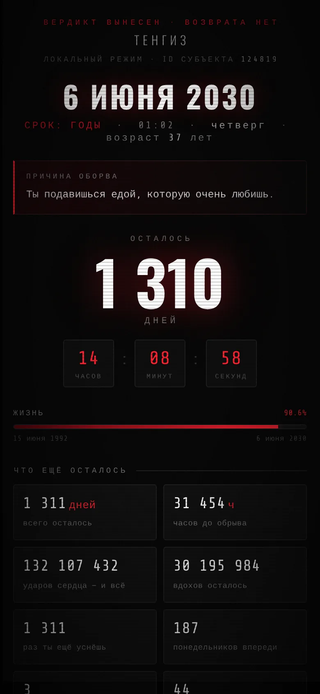
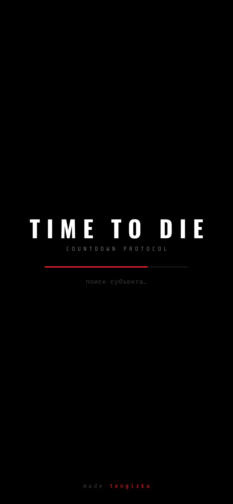
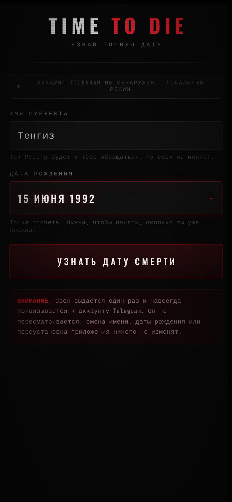
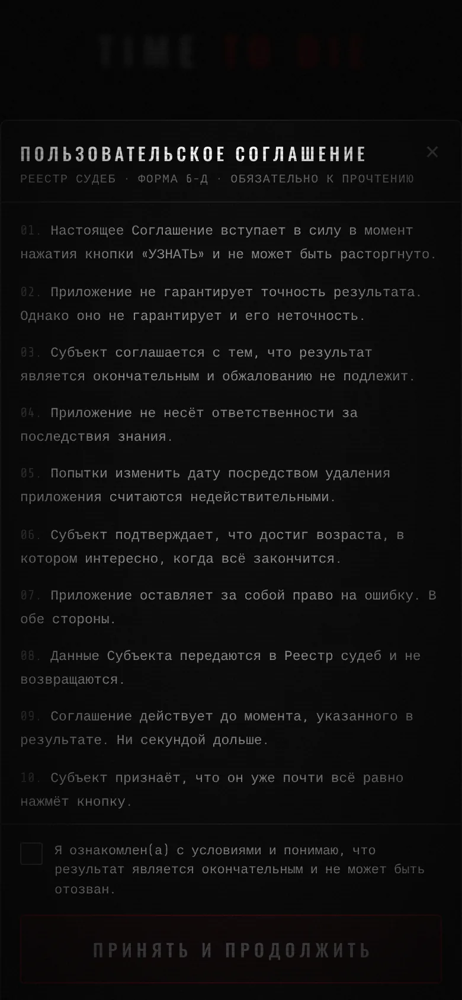
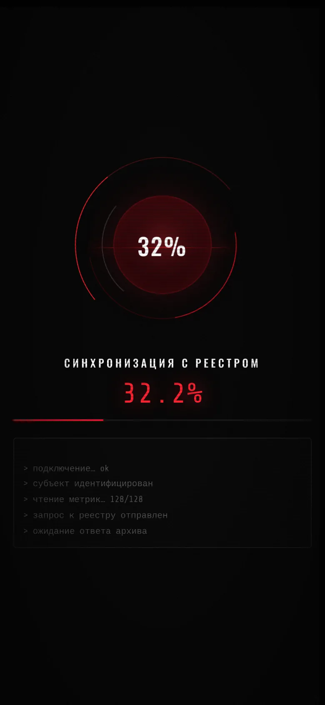
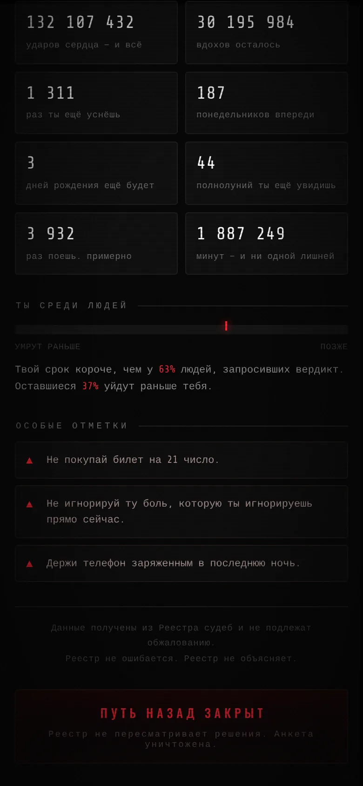

Приложение по мотивам фильма «Countdown». Вводишь имя и дату рождения, оно сканирует тебя, сверяется с Реестром судеб и выдаёт точную дату смерти. Дальше только таймер.
Узнать свою дату ↗
В фильме «Countdown» приложение показывало, сколько тебе осталось жить. TIME TO DIE делает то же самое, только в Telegram.
Вердикт привязан к аккаунту. Сменить дату рождения и вытянуть срок получше не выйдет. Кнопки «назад» тоже нет.





Мрачный эмбиент играет сразу после запуска. Во время скана нарастает низкий гул и ускоряется сердцебиение, а ближе к концу прилетает скример.
Скриншот скримера тут не покажу. Проверь сам.
Если срок уже истёк, вместо вердикта на экране статика. Обжалованию не подлежит.
Открывается прямо в Telegram.
Открыть в Telegram ↗